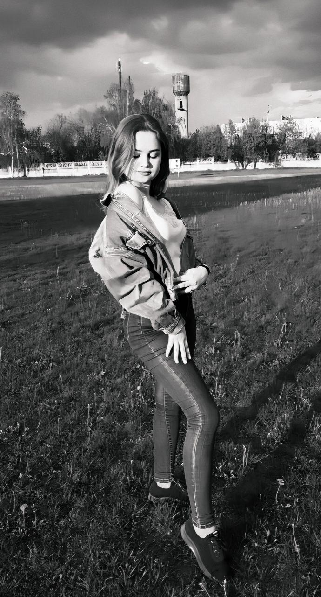
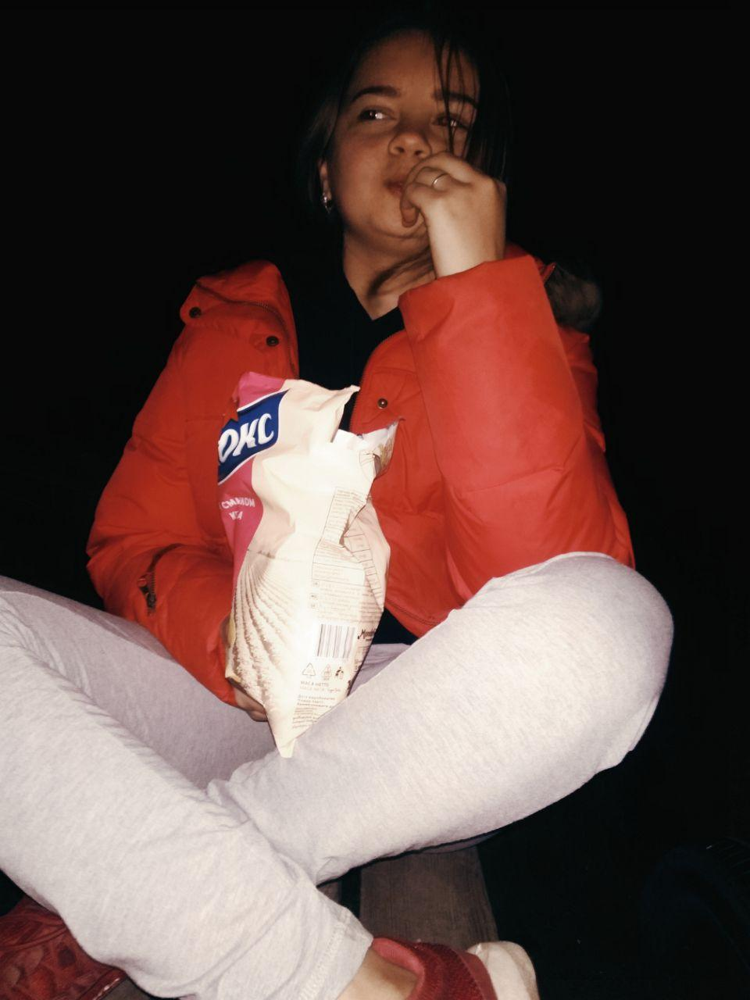
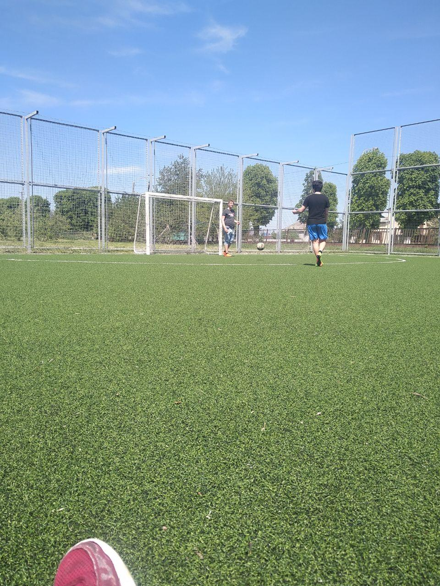
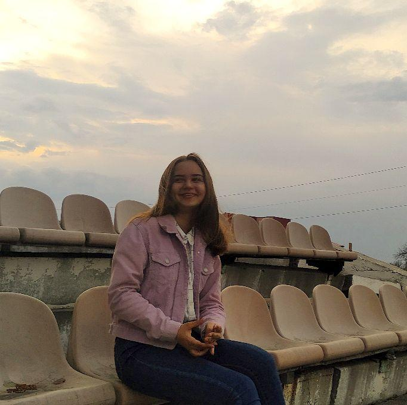

Як я провела карантин?
СПАЛА
Сон - періодичний функціональний стан організму людини, який характеризується вимкненням свідомості й зниженням здатності нервової системи відповідати на зовнішні подразники.
Їла
Їжа — все, що споживає людина й інші живі істоти для підтримання життя; харчі. Речовини, що їх організм отримує з довкілля, є для нього будівельним матеріалом і джерелом енергії.
Навчалась
Навча́ння — це організована, двостороння діяльність, спрямована на максимальне засвоєння та усвідомлення навчального матеріалу і подальшого застосування отриманих знань, умінь та навичок на практиці. Цілеспрямований процес передачі і засвоєння знань, умінь, навичок і способів пізнавальної діяльності людини.
Спала
Сон - періодичний функціональний стан організму людини, який характеризується вимкненням свідомості й зниженням здатності нервової системи відповідати на зовнішні подразники.
Картинна галерея по вашому бажанню



